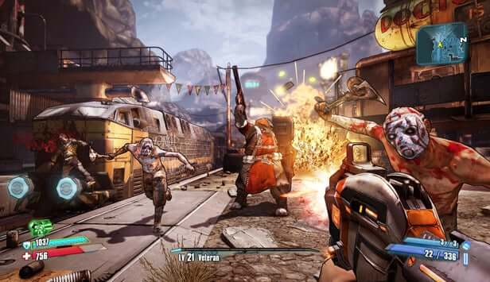
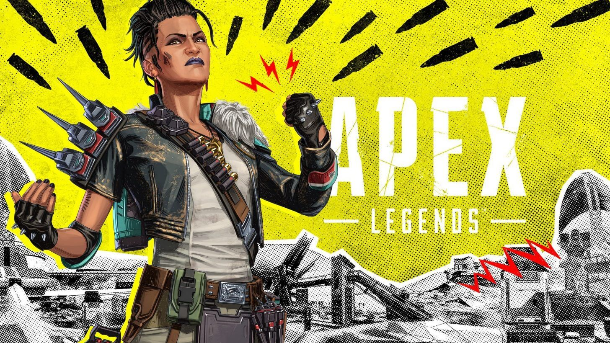
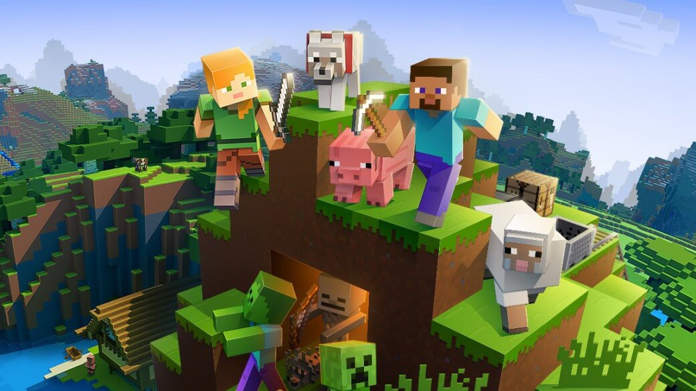

Borderlands
Borderlands se desarrolla en el planeta Pandora. Atraídas por las aparentemente vastos yacimientos minerales,
muchas naves colonizadores de la Dahl Corporation (una de las muchas diversas mega-corporaciones que aparentemente
controlan y gobiernan planetas enteros) viajaron al planeta para construir asentamientos

User467adR:
Juego realmente divertido que sigue el camino del primer juego, que para mi gusto fue todavía un poquito
mejor ya que fue que sento las bases.en este encontraremos diversidad de escenarios y muchas armas.
Apex Legends
Apex Legends se desarrolla en un universo envolvente en el que la historia evoluciona continuamente, los mapas cambian en cada
temporada y nuevas leyendas se unen a la lucha. ¡Deja tu huella en los Juegos Apex con multitud de atuendos distintivos y únete
a la aventura

Emideadman:
Gráficamente Apex luce bien. No es un referente tecnologico y se notan carencias en sus texturas o efectos que podrian ser mejor,
como particulas o iluminación, pero aun asi el titulo luce bien. Lo logra alcanzando una buena calidad global y haciendo que toda
su isla, como conjunto, luzca bien, con suficientes detalles como para generar un entorno atractivo que varia dependiendo de cada
zona de la isla
Minecraft
Minecraft es un videojuego de mundo abierto donde la exploración y las construcciones son fundamentales. Creado por Markus Notch
Persson, nos permite desarrollar nuestros propios universos fantásticos y artísticos, mediante la colocación y destrucción de bloques

Samayoa214:
Para mi minecraft es un juego que marco la historia y se merese estar donde esta con pocos graficos y siendo un juego mu simole esta muy entretenido
y muy adictivo. es para toda las edades y no carese de cosas violentas y una forma educativa de entretenimiento para todas las edades y para tanto
se esncuetra en todo los dipositivos. Si creo que esta muy bien este video debrian verlo esta en ingles pero esta subtitulado al espanol